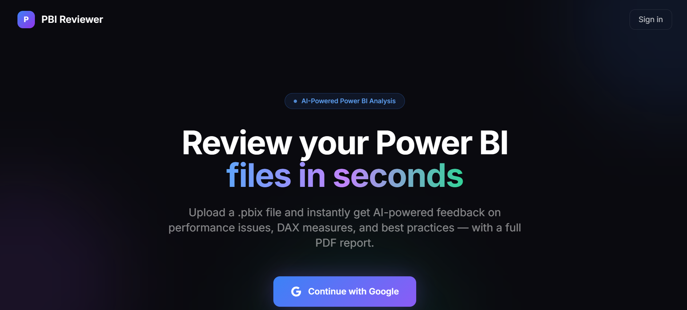
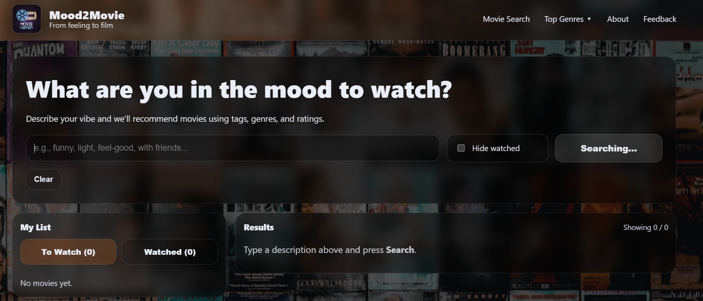
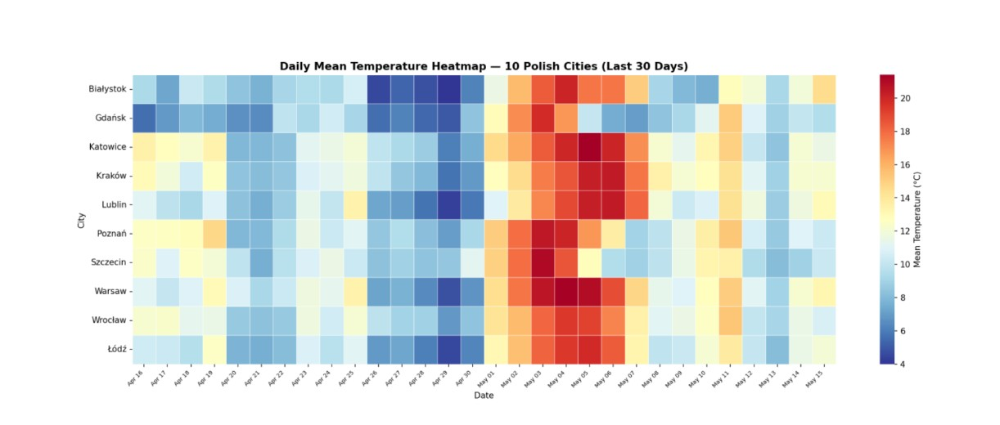

Featured Project
An AI-powered SaaS tool that reviews Power BI (.pbix) files and instantly returns feedback on performance issues, DAX measures, and best practices, delivered as a full PDF report. Built with Next.js, Supabase, and Stripe, with live paying users. Source is private, live product below.


This project involves creating a dynamic dashboard using Power BI, leveraging a comprehensive dataset covering social, demographic, economic, and environmental indicators for countries worldwide.

A full-stack mood-based movie recommender: React/Vite frontend, FastAPI backend using Pandas, Scikit-learn, and Sentence Transformers for the recommendation engine. Built as a team project applying agile practices.

A collection of 5 real-world data mining projects in Python: job listings scraper, multi-source news headline analyzer with NLP, product price tracker, weather data analysis across Polish cities, and a COVID-19 dashboard using public APIs.
An ETL pipeline for coffee sales data built with Python and PostgreSQL, covering extraction, cleaning, and loading into a structured database.
Web scraping hotel information from Booking.com, followed by data analysis and building predictive models for hotel prices based on the provided features.

This project contains the code and resources for the WiDS Datathon 2024 Challenge. The objective of this challenge is to predict the metastatic_diagnosis_period using a variety of features derived from the given dataset.